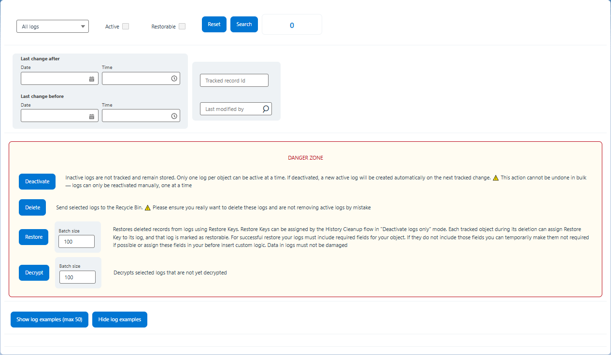
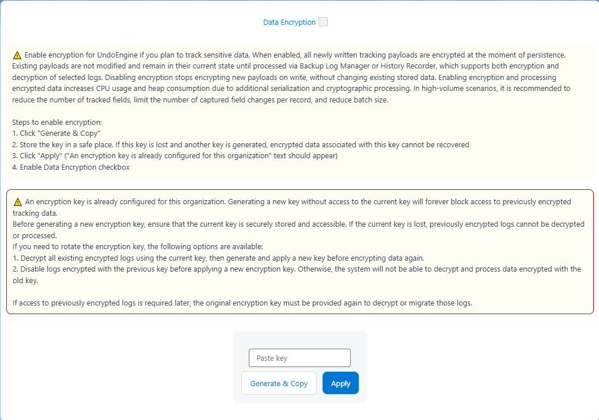
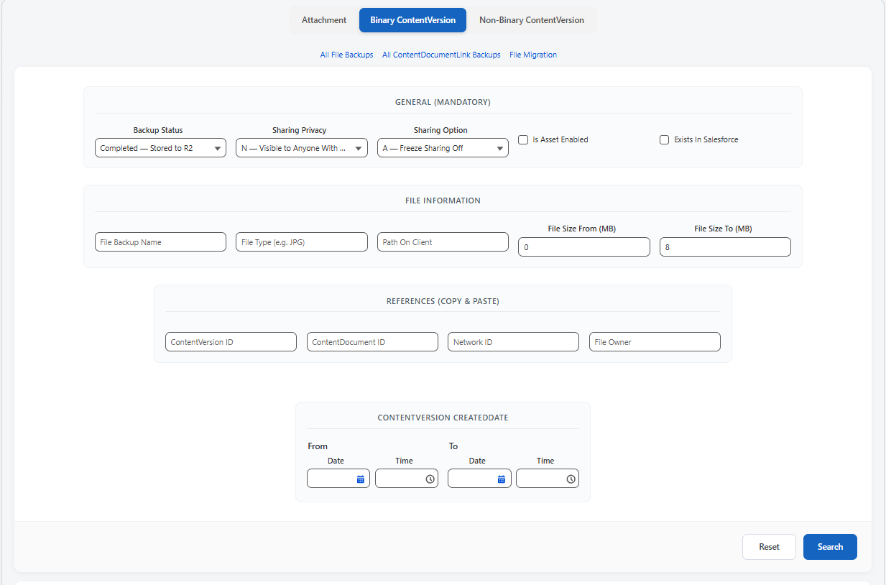

Main Features

01 — Timeline
Record History Viewer
See exactly what changed, when, and by whom — then undo just the part that was wrong.
- Field-by-field navigation
- User & date filters
- Rollback a single field, a set of fields, or restore the entire record
- Interactive arrows for history timeline

02 — Bulk recovery
Mass Restore Interface
Fix a bad bulk update across thousands of records without hitting Salesforce list view limits.
- Custom list view engine bypassing standard Salesforce row limits
- Bulk undo operations with exportable CSV audit trail

03 — Configuration
Settings UI
Tune UndoEngine to your org's scale and risk tolerance.
- Custom error logs
- Notifications on failures
- Sync/async control
- Batch size control

04 — Log control
Log Manager
Stay in control of what's tracked and recoverable, including deletions.
- Manage your history logs via the special UI
- Perform deleted records mass restore

05 — Security
Data Security Manager
Keep tracked history encrypted and compliant with your org's security policy.
- Generate encryption keys for secure data storage
- Enable or disable encryption per configuration
- Support key rotation for enhanced security

06 — Files
Mass File Backup (R2 Integration)
Everything you need for a complete recovery.
- Attachments
- ContentVersions
- Historical relationships
- Migration of your existing files
- Automatic backup of newly created files